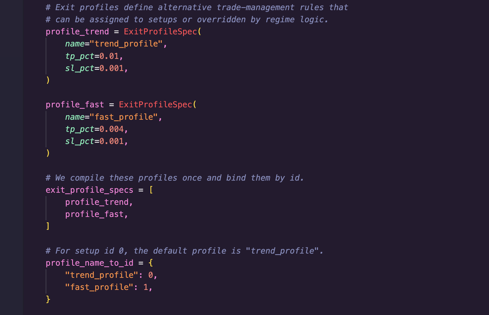
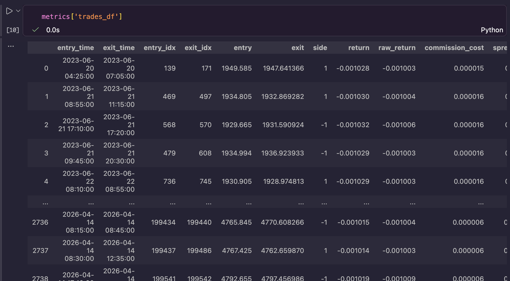
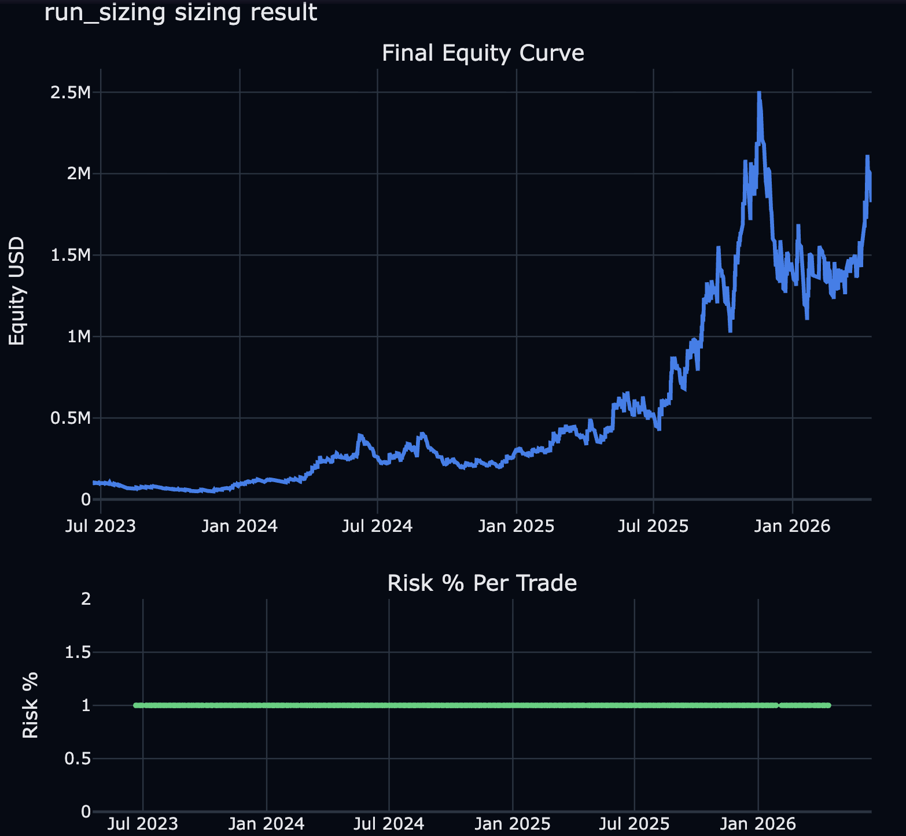
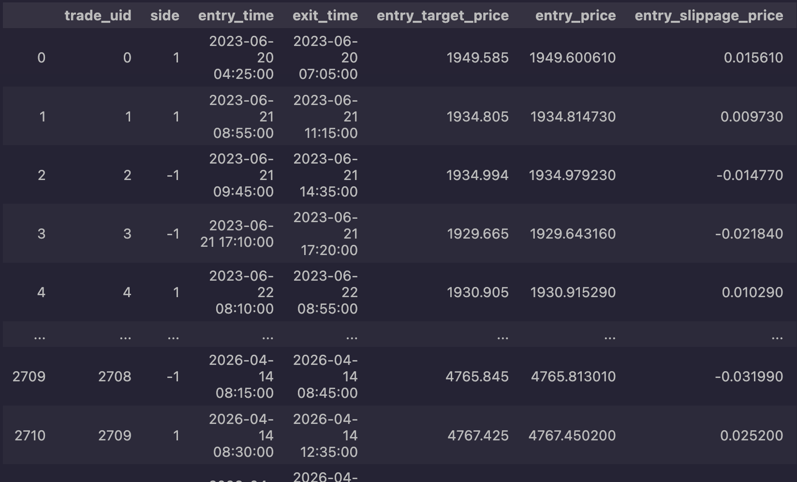
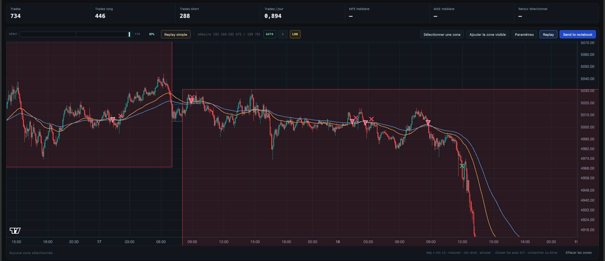

Arnaud Barbier · Moteur de backtestMode Algo · octobre 2026
Mode Algo, du signal aux trades gérés, avec frais et sizing
Le mode Algo transforme un signal en stratégie complète. L'utilisateur choisit ses entrées, décrit la gestion de chaque position et configure les frais et la taille des positions ; le moteur, compilé avec Numba, exécute le backtest et restitue chaque trade avec son prix visé, son prix exécuté et la raison de sa sortie.
La gestion se décrit à quatre niveaux, du simple réglage d'un TP et d'un SL jusqu'à une fonction compilée. Le sizing, lui, peut être modifié sans relancer le backtest. Le signal peut être étudié en amont dans le mode Research.
4niveaux pour décrire la gestion des positions
17codes de sortie, chacun tracé dans le journal des trades
2 714trades redimensionnés depuis la tape, sans relancer le noyau
1 %de l'equity risqué par trade dans l'exemple de sizing
Aperçu

Les profils. Deux profils de sortie, l'un pour suivre la tendance, l'autre plus rapide. Ils sont compilés une fois, puis attribués par setup ou par régime. Cliquez sur une capture pour l'agrandir.
Les trades. Le backtest affiché dans le graphique du mode Research : régimes H1 en zones colorées, entrées en triangles, sorties en croix.

Le journal.metrics["trades_df"] : une ligne par sortie, avec les prix d'entrée et de sortie, le rendement brut et net, la commission et le spread.

Le sizing. La même tape de trades redimensionnée à 1 % de risque par trade : courbe d'equity en dollars et risque engagé à chaque trade.
01Du signal au trade
Ce que l'utilisateur décrit et ce que le moteur prend en charge
Le mode Algo prend en charge tout le backtest d'une stratégie sur un actif. L'utilisateur décrit sa logique : indicateurs, conditions d'entrée et règles de gestion. Le moteur applique le modèle d'exécution, puis renvoie les rendements, les métriques et le journal des trades.
01Features
Indicateurs et données d'unités de temps supérieures, alignés sur la série principale.
02Setups
Scores long et short, choix d'une entrée et prise en compte du régime.
03Exécution
Timing, profils de sortie, règles de gestion et frais.
04Résultat
Journal des trades, tape pour le sizing, graphique et tests de validation.
Le parcours d'un backtest mono-stratégie. Les modes allocation et investissement sont présentés sur leurs propres pages.
Choisir entre plusieurs setups
Chaque setup produit cinq colonnes : scores long et short, états actifs et identifiant. DecisionConfig retient le meilleur score et tranche les égalités selon la règle choisie. L'identifiant du setup suit ensuite le trade et peut désigner son profil de sortie.
S'adapter au régime de marché
Un régime peut bloquer ou pondérer une entrée, puis changer son profil ou sa stratégie de sortie. Il est fourni sous forme d'identifiants bruts : le moteur applique lui-même la disponibilité et le délai d'action, sans décalage manuel.
02Indicateurs et causalité
Utiliser une donnée H1 seulement après la clôture de sa bougie
Une feature est une fonction qui lit les colonnes du moteur, par exemple f.col("Close"), et renvoie une ou plusieurs séries. Les colonnes calculées rejoignent ensuite le moteur, et les règles de sortie peuvent les utiliser par leur nom.
10:00 → 11:00Bougie H1 en formation
Sa valeur finale ne peut pas servir aux décisions M15 prises avant sa clôture.
À partir de 11:00Valeur H1 disponible
bar_close aligne la valeur au bon moment ; max_age écarte une valeur trop ancienne.
Déclaration d'une feature H1 sur une série M15. Un simple forward-fill depuis 10:00 donnerait la valeur finale une heure trop tôt.
BacktestConfig fixe ensuite le timing, les sessions, les filtres de bougies, le nombre maximal d'entrées, le cooldown et les sorties par défaut. Avec entry_delay=1, l'entrée se fait à l'ouverture de la bougie suivante ; une exécution sur la bougie du signal serait souvent trop optimiste.
03Quatre niveaux de gestion
Décrire la gestion des positions, du réglage simple à la fonction compilée
Deux stratégies qui partagent le même signal peuvent obtenir des résultats très différents selon la façon dont leurs positions sont gérées. Le moteur permet de décrire cette gestion à quatre niveaux, chacun plus précis que le précédent :
Niveau
Ce que l'on déclare
Coût d'une modification
01 · Configuration
TP, SL, break-even, trailing, durée maximale et passage à plat, dans BacktestConfig.
Aucune recompilation
02 · Profils
Un ExitProfileSpec nommé, choisi par setup ou par régime. Les champs non renseignés reprennent la configuration.
Aucune recompilation
03 · Phases et règles
Des PhaseSpec contenant des PositionRule : déclencheurs, sorties partielles, renforts, déplacement du stop.
Aucune recompilation
04 · Stratégie njit
Une fonction personnalisée via ExitStrategySpec, avec un état local ou global.
Recompilation lorsque le code change
Les deux profils de l'exemple EMA : trend_profile (TP 1 %, SL 0,1 %) et fast_profile (TP 0,4 %, SL 0,1 %). Le setup 0 utilise trend_profile par défaut ; le régime peut le remplacer.
Avec les phases, une position commence en phase 0. Une règle peut se déclencher sur une excursion, un multiple du risque, un nombre de barres, une feature ou une combinaison de conditions. Elle peut alors prendre un bénéfice partiel, déplacer le stop, changer l'objectif, renforcer la position ou passer à la phase suivante.
01Entrer
Le setup choisit le profil et le risque initial.
02Déclencher
Une règle de la phase en cours observe sa condition.
03Agir
Prendre une partie, protéger le stop ou renforcer.
04Changer de phase
Appliquer les règles prévues pour la suite du trade.
Exemple de logique déclarative.
PartialConfig, PyramidConfig et AveragingConfig décrivent respectivement les sorties échelonnées, les ajouts aux positions gagnantes et les ajouts aux positions perdantes. Un état global peut aussi limiter le nombre de positions simultanées ou imposer une pause après plusieurs stops consécutifs.
04Frais et sizing
Passer du prix théorique au prix exécuté, puis à la taille de position
Appliquer les frais
ExecutionCostSpec décrit le contrat, la taille des lots, le spread, les commissions et le slippage. En mono-actif, ces paramètres se déclarent à la racine de la spec.
Le slippage est toujours défavorable et dépend de l'amplitude de la bougie précédente, avec une pénalité plus forte sur les stops. Si le prix ouvre au-delà du stop, la sortie se fait au prix d'ouverture.
Dimensionner sans relancer le backtest
Avec return_tape=True, le run produit une tape de trades. engine.run_sizing(...) recalcule leurs tailles sans relancer le noyau : on peut ainsi comparer plusieurs règles de sizing en quelques secondes.
Une modification des entrées ou de leur gestion demande en revanche un nouveau backtest.
Une déclaration de frais pour l'or, puis le sizing appliqué à la tape du run. Le contexte strict vérifie que la tape correspond bien au run.
La tape de l'exemple EMA redimensionnée à 1 % de risque par trade. En bas, le risque engagé reste constant sur toute la période : c'est la taille de position qui varie, pas le risque.
Synthèse renvoyée par run_sizing
Trades
2 714
Taux de gain
17,2 %
Somme des rendements
+429,25 %
Rendement cumulé
+1 905,21 %
Rendement annualisé
+189,52 %
Drawdown maximal
−56,05 %
Sharpe
2,772
Profit factor
1,140
Calmar
3,381
Gain moyen / perte moyenne
+5,917 % / −1,042 %
Une perte moyenne de 1,04 % correspond au risque de 1 % plus les frais.

Après sizing, chaque trade conserve son prix visé, son prix exécuté et l'écart entre les deux.
Le break-even est armé sur une bougie et devient actif à la suivante ; sa sortie porte le libellé BE. Un mode optionnel traite la cible comme un ordre limite, avec un état d'attente et des événements de non-exécution.
05Lire les trades
Retrouver pour chaque sortie sa raison, ses prix et ses coûts
metrics["trades_df"] rassemble pour chaque trade le sens, les bougies d'entrée et de sortie, les prix visés et exécutés, le rendement brut et net, les excursions, le setup, le profil et la phase. Les colonnes de coûts permettent de revenir sur chaque exécution.
Le journal de l'exemple EMA. Sur les premières lignes, le rendement brut d'environ −0,100 % correspond au SL de 0,1 % ; le rendement net ajoute la commission et le spread.
Code
Sortie
Code
Sortie
1
SL
10
Passage à plat forcé
2
TP
11
Sortie forcée par la stratégie
3
Break-even
12
Durée maximale
4 à 6
TP sur EMA ou croisement
13
TP partiel
7
Stop du trailing
14
Stop de groupe
8
Signal de sortie
15
Invalidation
9
Retournement
16 et 17
Action locale, appel de marge
Une sortie partielle forme une ligne distincte, avec le même trade_uid que le trade d'origine. Compter les lignes ne suffit donc pas à compter les positions.
06Mettre à l'épreuve
Vérifier que le signal apporte quelque chose, à gestion identique
Pour tester une idée de gestion, il suffit de conserver les entrées et de ne changer que le profil de sortie. Comparer les rendements en multiples du risque, le drawdown et le temps de récupération année par année permet ensuite de situer l'effet dans le temps.
Pour tester le signal lui-même, la référence aléatoire doit poser la même question. random_entry_keep_exit_logic relance le moteur avec des entrées tirées au hasard et la même logique de sortie. Une référence à durée de détention fixe, qui ignore stops et objectifs, ne répond pas à cette question.
Vingt simulations suffisent pour une première lecture. Chaque simulation est un run complet ; ce nombre n'est pas un seuil statistique.
La validation se déclare dans le constructeur, avant les premiers essais : compteur d'essais, freeze, hors échantillon sur l'actif, puis cross-asset. DSR, Monte-Carlo, rétention hors échantillon, concentration de l'edge et dépendance aux valeurs extrêmes apportent des lectures complémentaires.
Afficher le backtest dans le graphique du mode Research
Research · le signal
Calculer l'indicateur, mesurer ce qui suit ses signaux, comparer les versions.
→
Algo · la stratégie
Choisir les entrées, gérer les positions, appliquer les frais et le sizing.
En commun : le graphique, le serveur local, le manifeste de freeze et le registre des essais.
Research sert en amont à écrire et examiner l'indicateur. Algo ajoute les règles d'entrée, la gestion, l'exécution et le risque. Ces choix doivent être formalisés : partager la vue ne transforme pas automatiquement une étude en stratégie.
La vue déclarée avant le run. Les colonnes EMA sont ajoutées pour l'affichage avec engine.bind_features, sans modifier les entrées du moteur.

Le résultat : chaque entrée (triangle) et chaque sortie (croix) correspond à un trade exécuté par le moteur. L'affichage ne compte aucun essai et ne touche pas au freeze.
08Compilation et limites
Savoir ce qui demande une recompilation, et ce qui reste à vérifier
Les profils et les règles sont transformés en matrices de paramètres : les modifier ne demande pas de recompiler un noyau déjà chargé. Modifier une fonction @njit du package invalide en revanche son cache.
Chemin
Ordre de grandeur de la première compilation
Sans système de sorties ni régime
Noyau spécialisé : environ 10 minutes.
Avec système de sorties ou régime
Noyau complet : 20 à 35 minutes.
Runs suivants dans la même session
Le noyau compilé est réutilisé ; changer un paramètre reste instantané.
Ces durées sont mesurées sur l'environnement de développement et ne constituent pas un benchmark. C'est aussi pour éviter ce coût que le mode Research étudie un signal sans compilation.
Limites connues
Timing des règles de sortie
Les features et excursions de la bougie en cours peuvent être lues avant une sortie partielle valorisée à son ouverture. Le comportement du drapeau sl_tp_be_priority reste lui aussi à vérifier. Ces chemins demandent une validation dédiée.
Conditions et sens du trade
OnFeature compare une valeur brute sans tenir compte du sens long ou short : il faut donc déclarer les règles par côté. Un opérateur inconnu, par exemple eq, est actuellement converti sans avertissement en gt.
Backend et frais en mono-actif
Le backend Python des stratégies de sortie est accepté mais pas exécuté : les stratégies personnalisées passent par Numba. En mono-actif, ExecutionCostSpec(assets={...}) est ignoré ; les frais se déclarent à la racine.
Ordres en attente et code publié
Un chemin run_orders existe pour les ordres en attente ; il n'a pas encore été audité. Le dépôt public est un instantané du moteur Algo d'avril 2026 : toutes les fonctions décrites ici n'y figurent pas encore.
Arnaud Barbier · Backtest engineAlgo mode · October 2026
Algo mode, from signal to managed trades, with costs and sizing
Algo mode turns a signal into a complete strategy. The user chooses the entries, describes how each position is managed and sets up costs and position size; the engine, compiled with Numba, runs the backtest and returns every trade with its target price, its executed price and the reason it closed.
Management is described on four levels, from a simple TP and SL up to a compiled function. Sizing can be changed without rerunning the backtest. The signal itself can be studied first in Research mode.
4levels to describe position management
17exit codes, each recorded in the trade log
2,714trades resized from the tape, without rerunning the kernel
1%of equity risked per trade in the sizing example
Preview
Profiles. Two exit profiles, one to follow the trend, the other faster. They are compiled once, then assigned by setup or by regime. Click a screenshot to enlarge it.
Trades. The backtest shown in the Research mode chart: H1 regimes as coloured zones, entries as triangles, exits as crosses.The log.metrics["trades_df"]: one row per exit, with entry and exit prices, gross and net return, commission and spread.Sizing. The same trade tape resized at 1% risk per trade: equity curve in dollars and the risk taken on each trade.
01From signal to trade
What the user describes and what the engine handles
Algo mode handles the whole backtest of a single-asset strategy. The user describes the logic: indicators, entry conditions and management rules. The engine applies the execution model, then returns returns, metrics and the trade log.
01Features
Indicators and higher-timeframe data, aligned on the main series.
02Setups
Long and short scores, choice of an entry and the regime.
03Execution
Timing, exit profiles, management rules and costs.
04Result
Trade log, tape for sizing, chart and validation tests.
The path of a single-strategy backtest. Allocation and investment modes are covered on their own pages.
Choosing between several setups
Each setup produces five columns: long and short scores, active states and an identifier. DecisionConfig keeps the best score and breaks ties with the chosen rule. The setup identifier then follows the trade and can select its exit profile.
Adapting to the market regime
A regime can block or weight an entry, then change its exit profile or strategy. It is supplied as raw identifiers: the engine applies availability and action delay itself, with no manual shift.
02Indicators and causality
Using H1 data only once its candle has closed
A feature is a function that reads the engine's columns, for example f.col("Close"), and returns one or several series. The computed columns then join the engine, and exit rules can use them by name.
10:00 → 11:00H1 candle forming
Its final value cannot feed M15 decisions taken before it closes.
From 11:00H1 value available
bar_close aligns the value at the right time; max_age discards a value that is too old.
Declaring an H1 feature on an M15 series. A plain forward-fill from 10:00 would hand over the final value an hour too early.
BacktestConfig then sets timing, sessions, candle filters, the maximum number of entries, the cooldown and default exits. With entry_delay=1, the entry happens at the next candle's open; executing on the signal candle would often be too optimistic.
03Four levels of management
Describing position management, from a simple setting to a compiled function
Two strategies sharing the same signal can end up far apart depending on how their positions are managed. The engine lets you describe that management on four levels, each more precise than the last:
Level
What you declare
Cost of a change
01 · Configuration
TP, SL, break-even, trailing, maximum duration and flattening, in BacktestConfig.
No recompilation
02 · Profiles
A named ExitProfileSpec, chosen by setup or regime. Fields left empty fall back to the configuration.
A custom function through ExitStrategySpec, with local or global state.
Recompilation when the code changes
The two profiles of the EMA example: trend_profile (TP 1%, SL 0.1%) and fast_profile (TP 0.4%, SL 0.1%). Setup 0 uses trend_profile by default; the regime can override it.
With phases, a position starts in phase 0. A rule can trigger on an excursion, a multiple of risk, a bar count, a feature or a combination of conditions. It can then take partial profit, move the stop, change the target, add to the position or move to the next phase.
01Enter
The setup picks the profile and the initial risk.
02Trigger
A rule in the current phase watches its condition.
03Act
Take a part, protect the stop or add.
04Change phase
Apply the rules planned for the rest of the trade.
An example of declarative logic.
PartialConfig, PyramidConfig and AveragingConfig describe scaled exits, adds to winning positions and adds to losing positions. A global state can also cap simultaneous positions or impose a pause after several consecutive stops.
04Costs and sizing
From theoretical price to executed price, then to position size
Applying costs
ExecutionCostSpec describes the contract, lot size, spread, commissions and slippage. For a single asset, these settings are declared at the root of the spec.
Slippage is always adverse and depends on the previous candle's range, with a heavier penalty on stops. If the price opens beyond the stop, the exit fills at the open.
Sizing without rerunning the backtest
With return_tape=True, the run produces a trade tape. engine.run_sizing(...) recomputes sizes without rerunning the kernel, so several sizing rules can be compared in seconds.
Changing the entries or their management, on the other hand, needs a new backtest.
A cost declaration for gold, then sizing applied to the run's tape. The strict context checks that the tape matches the run.
The EMA example's tape resized at 1% risk per trade. Below, the risk taken stays constant over the whole period: position size varies, not risk.
Summary returned by run_sizing
Trades
2,714
Win rate
17.2%
Sum of returns
+429.25%
Cumulative return
+1,905.21%
Annualised return
+189.52%
Maximum drawdown
−56.05%
Sharpe
2.772
Profit factor
1.140
Calmar
3.381
Average win / average loss
+5.917% / −1.042%
An average loss of 1.04% is the 1% risk plus costs.
After sizing, each trade keeps its target price, its executed price and the gap between them.
Break-even is armed on one candle and becomes active on the next; its exit is labelled BE. An optional mode treats the target as a limit order, with a pending state and non-fill events.
05Reading the trades
Finding, for each exit, its reason, its prices and its costs
metrics["trades_df"] gathers for each trade the direction, entry and exit candles, target and executed prices, gross and net return, excursions, setup, profile and phase. The cost columns let you go back over every fill.
The EMA example's log. On the first rows, the gross return of about −0.100% is the 0.1% SL; the net return adds commission and spread.
Code
Exit
Code
Exit
1
SL
10
Forced flatten
2
TP
11
Forced exit by the strategy
3
Break-even
12
Maximum duration
4 to 6
TP on EMA or crossover
13
Partial TP
7
Trailing stop
14
Group stop
8
Exit signal
15
Invalidation
9
Reversal
16 and 17
Local action, margin call
A partial exit is a separate row, with the same trade_uid as the original trade. Counting rows is therefore not the same as counting positions.
06Stress-testing
Checking that the signal adds something, with identical management
To test a management idea, keep the entries and change only the exit profile. Comparing returns in multiples of risk, drawdown and recovery time year by year then places the effect in time.
To test the signal itself, the random reference has to ask the same question. random_entry_keep_exit_logic reruns the engine with randomly drawn entries and the same exit logic. A fixed-holding reference, which ignores stops and targets, does not answer that question.
Twenty simulations are enough for a first look. Each simulation is a full run; this number is not a statistical threshold.
Validation is declared in the constructor, before the first trials: trial counter, freeze, out of sample on the asset, then cross-asset. DSR, Monte Carlo, out-of-sample retention, edge concentration and dependence on extreme values add further readings.
Compute the indicator, measure what follows its signals, compare versions.
→
Algo · the strategy
Choose entries, manage positions, apply costs and sizing.
Shared: the chart, the local server, the freeze manifest and the trial registry.
Research is used upstream to write and examine the indicator. Algo adds entry rules, management, execution and risk. Those choices have to be made explicit: sharing the view does not turn a study into a strategy on its own.
The view declared before the run. The EMA columns are added for display with engine.bind_features, without changing the engine's inputs.The result: each entry (triangle) and each exit (cross) is a trade executed by the engine. Displaying it counts no trial and leaves the freeze untouched.
08Compilation and limits
Knowing what needs recompiling, and what still needs checking
Profiles and rules are turned into parameter matrices: changing them does not recompile a kernel that is already loaded. Changing an @njit function in the package, however, invalidates its cache.
Path
Order of magnitude of the first compilation
No exit system and no regime
Specialised kernel: about 10 minutes.
With an exit system or regime
Full kernel: 20 to 35 minutes.
Later runs in the same session
The compiled kernel is reused; changing a parameter stays instant.
These durations come from the development environment and are not a benchmark. Avoiding this cost is also why Research mode studies a signal without compilation.
Known limits
Exit-rule timing
The current candle's features and excursions can be read before a partial exit valued at its open. The behaviour of the sl_tp_be_priority flag also remains to be checked. These paths need dedicated validation.
Conditions and trade direction
OnFeature compares a raw value without regard to long or short, so rules have to be declared per side. An unknown operator, for example eq, is currently converted to gt without warning.
Backend and single-asset costs
The Python backend for exit strategies is accepted but not executed: custom strategies go through Numba. For a single asset, ExecutionCostSpec(assets={...}) is ignored; costs are declared at the root.
Pending orders and published code
A run_orders path exists for pending orders; it has not been audited yet. The public repository is an April 2026 snapshot of the Algo engine: not every feature described here is in it yet.